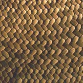
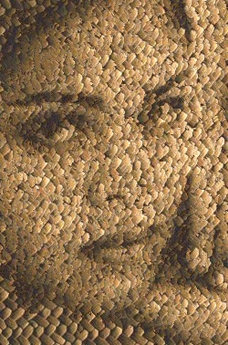
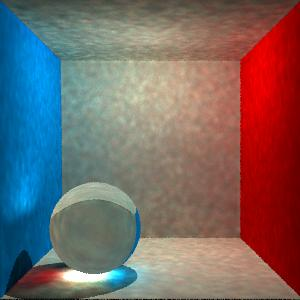

COS526 Advanced Computer Graphics
Course Website- Project 1: Image Analogies - 2D image generation
using the Image Analogies method.
 + =  - Project 2: Laplacian Meshes - 3D Mesh editing using
a Laplacian representation.


- Project 3: Photon Mapping - Improving Monte Carlo
path tracing algorithms using photon maps to get caustics and global illumination
 - Final Project: Interactive Fluid Simulation - In Progress